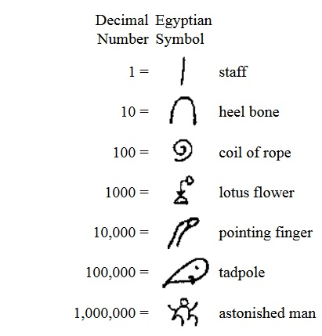

About Numbers¶
How computers do the computing¶
History - how everything began¶
In the beginning people lived in small groups, and they were poor - there was not much to count. The quantities to handle were small and using fingers, knot in strings, marks on wooden sticks and notches in pieces of clay.
But as civilization mead progress, people grew in mumbers and there was a need to keep track of greater numbers of sheep, pottery or whatever was of value in the old time. Already in the very primitive beginnings of numbering and counting the number ten was dominant. As humans have 10 fingers (latin: digitus) many of the ancient counting systems were based on the 10 digits.
The Aegyptians had signs for munbers that were based in the number of ten.
The Romans had a numbering system based on the multiples of 1 and 5 and they used symbols from the latin alphapet:
Roman mumbers - basic symbols
1 = I 5 = V
10 = X 50 = L
100 = C 500 = D
1000 = M
The numbers were combined to form values up to 3999
2 = II 3 = III
4 = IV 6 = VI
8 = VIII 9 = IX
11 = XI 13 = XIII
14 = XIV 21 = XXI
40 = XL 44 = XLIV
2016 = MMXVI 2091 = MMXCI
Its obvious that these numbers are no good basis for doing calculations. But roman numbers are in use until today, sometimes for numbering chapters of a book or to represent the hours on a clock.
Later the Indians developed a system of numbers where they used symbols from 1 to 9, but only in the 7th century the introduced a symbol for zero (arabic: sifr). The introduction of digit symbol for zero was a great progress. But when it came to Europe, some backward oriented religions rejected the zero as ‘devils work’ (the talk is of course about the christian religion).
The decimal system as we know it¶
Now, with ten symbols including zero. it was possible to use a positional system, where each number represented a different value depending on the position, where it was placed. In the number:
1660
the first 6 means 6*100 and the second 6 means 6*10. The zero represents 0*1
This notation allows for easy calculations with pen and paper (Just as a reminder: that was the way to do calculations in the thousands of years before 1980 ... ok, the first mecahnical calculators were available a hundred years earlier):
3 2 4 5
+ 1 0 9 3 0
---------
1 4 1 7 5
For doing multiplication, mankind had to learn the basic multiplication table by heart:
1 1
2 2 4
3 3 6 9
4 4 8 12 16
5 5 10 15 20 25
6 6 12 18 24 30 36
7 7 14 21 28 35 42 49
8 8 16 24 32 40 48 56 64
9 9 18 27 36 45 54 63 72 81
10 10 20 30 40 50 60 70 80 90 100
1 2 3 4 5 6 7 8 9 10
Now even multiplication on paper was possible by a simple form or repeated addition:
3 0 9 8 * 3 1 5
9 2 9 4
3 0 9 8
1 5 4 9 0
---------------
9 7 5 8 7 0
All this math on the base of 10 different symbols is directly connected to our biology: we have 10 fingers.
Positional numbering systems on different bases¶
If math would have been developed by the inhabitants of Duckburg (Portuguese: Patópolis , German: Entenhausen), the number system would surely be based on eight symbols, reflecting their eight fingers.

But that would not stop them from doing reasonable math, their multiplication table is just a little bit shorter:
1 1
2 2 4
3 3 6 11
4 4 10 14 20
5 5 12 17 24 31
6 6 14 22 30 36 44
7 7 16 25 34 43 52 61
10 10 20 30 40 50 60 70 100
1 2 3 4 5 6 7 10
And multiplication would look more or less the same:
6 0 3 2 * 4 7 3
3 0 1 5 0
5 2 2 6 6
2 2 1 1 6
---------------
3 5 6 1 7 7 6
What we can see: the same values require more digits.
How do computers count?¶
Computers usually don’t have fingers, so which numerical base should the choose? Well, some computers have at least one hand ...
... and they have only two fingers. Perhaps two is a good numerical base for computer math. Even more as computers internally work with electricity, where elements are either switched on or off. So almost all computers internally use numbers on base two. This system of doing math is called binary.
As binary numbers have only two symbols, they are easy to write, but get very long:
0 = 0 15 = 1111
1 = 1 16 = 10000
2 = 10 1000 = 111101000
3 = 11
4 = 100
9 = 1001
As in the base 10 (and any other base), every position represents a power of the base number. The decimal system applies to the numbers positions powers of 10:
10**0 = 1
10**1 = 10
10**2 = 100
....
The binary system does the same:
bin dec
2**0 = 1 ==> 1
2**1 = 10 ==> 2
2**2 = 100 ==> 4
2**3 = 1000 ==> 8
2**4 = 10000 ==> 16
....
The addition of two values is easy:
110010101101 (3245)
+ 10101010110010 (10930)
----------------
11011101011111 (14175)
The multiplication table is very short:
1 1
10 10 100
1 10
For the virtue of completeness - here is the multiplication example (3098*315):
110000011010 * 100111011
110000011010
110000011010
110000011010
110000011010
110000011010
110000011010
---------------------------
11101110001111111110
Why binary numbers matter¶
With modern programming languages, the internal representation of numbers is hidden behind useful abstractions. In a program language we use the natural (for us!) decimal system without caring what happens internally. But sometime the binary nature of the computer pops up.
Boolean algebra is binary
We start from the idea, that 0 is False and everything else is True. Then boolean expressions can be linked to binary math:
'and' is a binary multiplication
'or' is a binary addition
True and True = 1 * 1 = 1 = True
True and False = 1 * 0 = 0 = False
False and False = 0 * 0 = 0 = False
True or True = 1 + 1 = 10 = True
True or False = 1 + 0 = 1 = True
False or False = 0 + 0 = 0 = False
Bit-operations work on binaries
All data in a computer is usually stored in bytes, bytes are save to a disk and bytes are transferred over the networks. Sometimes it is ncessary to look at bytes. Python helps us, of course.
There are the conversion functions (see: builtin functions):
>>> bin(17) # return a string which is a binary representation of the number
'0b10001'
>>> hex(255) # there is a hexadecimal representation for base 16
'0xff'
>>> oct(30) # octal representaion as a number on base 8
'0o36'
>>> 0b1101 # and all numbers can be entered in their binary form
13
>>> 0xa8 # valid symbols for hex values are 0..9, a..f
168
>>> 0o342 # numbers can be specified in their octal form
226
As we see, python also considers numbers on base 8, so even Mickey and Donald are happy!
Finally there are arithmetic operations in Python that work on bits:
>>> a = 29
>>> bin(a)
'0b11101'
>>> b = 7
>>> bin(b)
'0b111'
>>> bin(a&b) # 'and' ==> 1 for every position where both input bits are '1'
'0b101'
>>> bin(a|b) # 'or' ==> 1 for every position where at least one of the input bits is '1'
'0b11111'
>>> bin(a^b) # 'xor' ==> 1 for every position where exactly one input bit is '1'
'0b11010'
>>> bin(b<<2) # 'lshift' moves bits to the left, adding '0' at the right side
'0b11100'
>>> bin(a>>3) # 'rshift' moves bits to the right, loosing bits that are 'shifted out'
'0b11'
Binary operations do not occur in everdays little scripts. The description is here for the completeness. When ‘physical computing’ is a possible subject of programming, then the bit-wise processing of data may become important.
Whats missing? - Negative numbers, floating point numbers